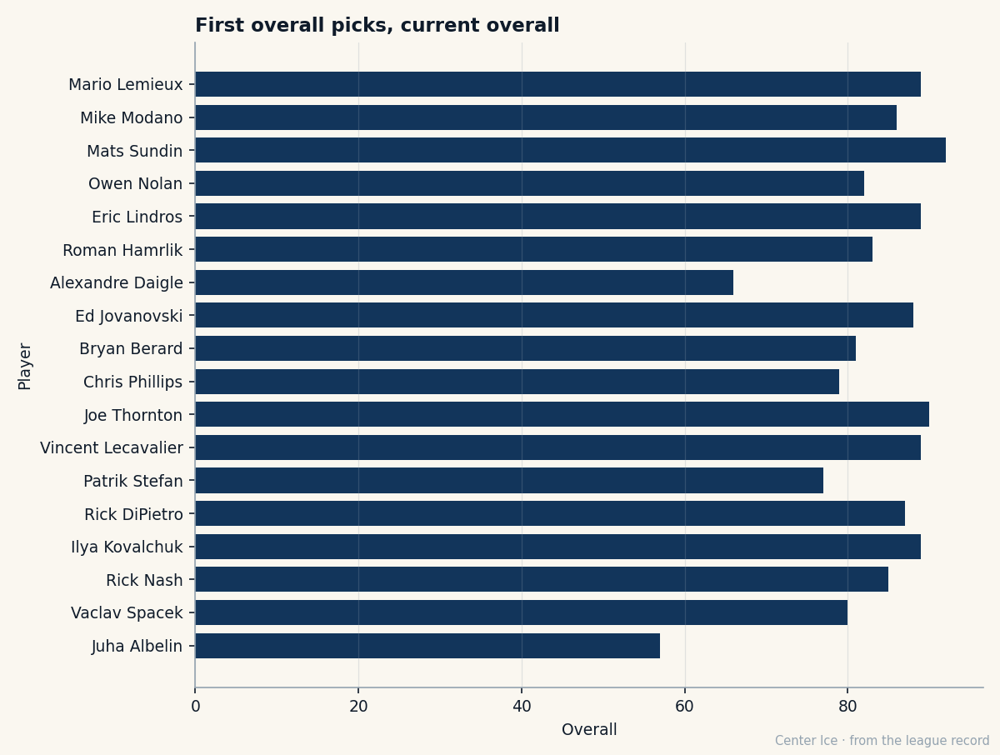

Five Years to the First Save That Mattered: Rick DiPietro, $0.14M a Win, and an Expiring Deal
The first overall pick of 2000 took four seasons to become a regular. Now the Index has him up nine and the Islanders hold nothing on him after June.
 Carol BinghamFeatures writer · Rinkside
Carol BinghamFeatures writer · Rinkside Rick DiPietro86 was the first name called at the 2000 draft. The Islanders took him from Boston University, where he had played one season, won Hockey East Rookie of the Year, and gone 0-1 in a single Beanpot semifinal before winning the tournament's top-goaltender award. He was 18. He is 24 now, has dressed for 98 NHL games, and the Bureau's Development Index has him up nine places from a base of 79 to a today-reading of 87.
Rick DiPietro86 was the first name called at the 2000 draft. The Islanders took him from Boston University, where he had played one season, won Hockey East Rookie of the Year, and gone 0-1 in a single Beanpot semifinal before winning the tournament's top-goaltender award. He was 18. He is 24 now, has dressed for 98 NHL games, and the Bureau's Development Index has him up nine places from a base of 79 to a today-reading of 87.
He also makes $1.10M, has zero years left on that contract, and his 8 wins in 14 starts this season cost  New York Islanders roughly Rick DiPietro's share divided by eight, which is $0.14M a victory. No first overall pick on this sheet costs less per win.
New York Islanders roughly Rick DiPietro's share divided by eight, which is $0.14M a victory. No first overall pick on this sheet costs less per win.

The arrival took four years
The debut came on January 27, 2001, against Buffalo. DiPietro was 19. He played 20 more games that season and finished 7-12-0 with a 3.64 GAA. The next year he appeared 10 times and dressed for one playoff game, then spent the 2002-03 season in the minors. The call-up that stuck came in 2003-04: 63 starts, 32 wins, a 2.77 GAA, one shutout. He earned the Conn Smythe the Islanders did not.
This season the numbers bend the other way. In 14 games he is 8-5-0, the GAA has dropped to 2.46, and the save percentage sits at 0.880. The Index, which measures today's form against the Book's base, has moved him up nine. That puts him on the risers list beside  Pascal Leclaire89, the goaltender I followed a month ago in Columbus, and two spots behind
Pascal Leclaire89, the goaltender I followed a month ago in Columbus, and two spots behind  Vaclav Nedorost84 in the overall standings of that table.
Vaclav Nedorost84 in the overall standings of that table.
The grades tell you where the improvement comes from. His skating is a 93, his agility a 96, his puck-handling a 99. The soft spots are consistency (51), toughness (50), and style (50). Those three numbers sit like a warning on a page that otherwise reads like a high-end starter. The Index found his form and moved the overall to 87. The 51 and the 50 stay exactly where they are.
What $1.10M buys in a crease
The contract sheet says 0 years left. The Islanders will either extend him or watch a first overall pick with a potential of 98 walk. The payroll sits at $61.02M with 21 points of production; the club ranks 9th in spending and 9th in points, a ratio of $2.91M per point that is neither cheap nor terrible. DiPietro is a rounding error in that number.
His roommates are not what a first overall pick was supposed to get.  Alexei Yashin83, the 1992 second overall, is the best skater on the roster at 84.
Alexei Yashin83, the 1992 second overall, is the best skater on the roster at 84.  Roman Hamrlik82, taken first in 1992 by Toronto before the Islanders got him, plays behind DiPietro at 83.
Roman Hamrlik82, taken first in 1992 by Toronto before the Islanders got him, plays behind DiPietro at 83.  Mark Parrish81 and
Mark Parrish81 and  Jason Blake81 sit at 82. The five men the Islanders call their top six forwards carry overalls of 84, 82, 82, 81, and 81. For a goaltender trying to grow into a franchise number, that is a room that asks him to win games the players around him cannot win.
Jason Blake81 sit at 82. The five men the Islanders call their top six forwards carry overalls of 84, 82, 82, 81, and 81. For a goaltender trying to grow into a franchise number, that is a room that asks him to win games the players around him cannot win.
The injuries have not helped. New York Islanders carries the most men out in this league: 5 on the shelf, from  Mariusz Czerkawski70's elbow to
Mariusz Czerkawski70's elbow to  Radek Martinek72's. The last ten games read WWWWWLLOTLWL, 35 goals for and 25 against, a stretch that should look better than it does because the goaltender in net for most of it is a man the Bureau still grades at a base of 79.
Radek Martinek72's. The last ten games read WWWWWLLOTLWL, 35 goals for and 25 against, a stretch that should look better than it does because the goaltender in net for most of it is a man the Bureau still grades at a base of 79.
The 2000 class, five years on
Rick DiPietro sits 6th among the first overall picks whose current overall you can read on this sheet.  Mats Sundin92 (1989, 92),
Mats Sundin92 (1989, 92),  Joe Thornton86 (1997, 90),
Joe Thornton86 (1997, 90),  Mario Lemieux85 (1984, 89),
Mario Lemieux85 (1984, 89),  Eric Lindros83 (1991, 89), and
Eric Lindros83 (1991, 89), and  Vincent Lecavalier86 (1998, 89) are ahead of him.
Vincent Lecavalier86 (1998, 89) are ahead of him.  Ed Jovanovski84 (1994, 88) is one spot ahead at 88. DiPietro's 87 is the same number Vincent Lecavalier carried into the conversation I last wrote about on the 29th, and the same number Pascal Leclaire reached on form alone.
Ed Jovanovski84 (1994, 88) is one spot ahead at 88. DiPietro's 87 is the same number Vincent Lecavalier carried into the conversation I last wrote about on the 29th, and the same number Pascal Leclaire reached on form alone.
Below him in the class: Patrik Stefan at 77, Alexandre Daigle at 66. The gap between the best and worst first overall pick from this era is 26 points. DiPietro sits in the middle of that range at 87, with a potential the Book grades at 98 and a contract that ends before he can prove it.
What the Index cannot fix
The Development Index measures the distance between what a player is and what he is showing tonight. It has moved DiPietro up nine. It has not moved his consistency above 51 or his toughness above 50. Those are the numbers that decide whether a goaltender wins a playoff series, and the Index has no language for them. It can tell you a man is playing above his base. It cannot tell you whether the base will hold in April.
The Islanders are 9-6-1, 21 points, and they have not been outscored badly in any of their last ten. The 35-25 scoring margin in that stretch is the best the room has produced since DiPietro became a full-time starter. The goaltender behind it is the cheapest first overall pick in this league, the one whose contract expires first, and the one whose grades say he is still a 79 pretending to be an 87. Whether the pretending holds past June is the first question the Islanders have to answer.
His morale is 86. The locker room has not turned on him. The building still holds a pick that was supposed to change everything, and the pick is finally, five years late, making saves that look like the ones the scouts saw in Boston.